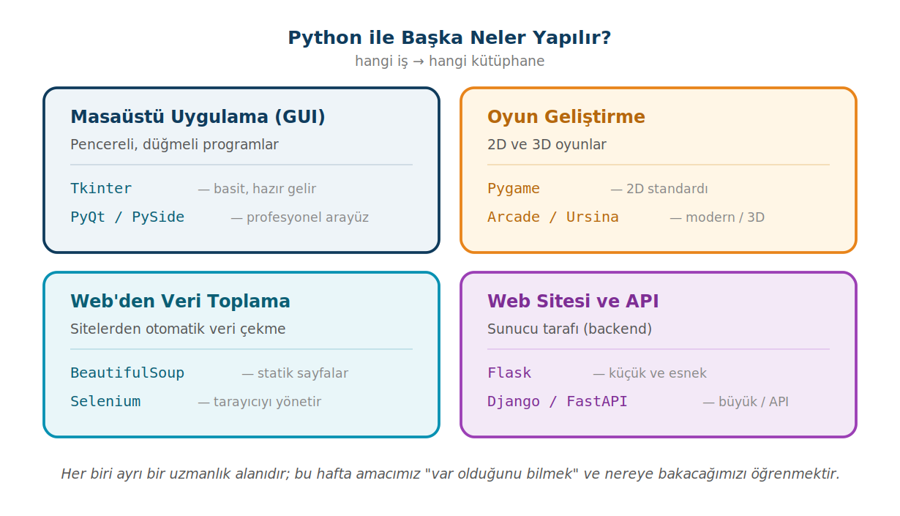

Derse Giriş: Python ile Neler Yapılır?
Dönemin ilk haftasında Python'un dört farklı dünyasına kısa bir tur atıyoruz: masaüstü uygulamaları, oyun geliştirme, web'den veri toplama ve web/sunucu geliştirme. Amaç bunları öğrenmek değil, var olduklarını bilmek, ve dönem projenizin konusunu seçerken nereye bakabileceğinizi görmek.
Bu sayfada
1Python yalnızca konsol değildir
Şimdiye kadar yazdığımız programlar hep aynı şekilde çalıştı: çalıştırırsınız, ekrana (konsola) yazı basar, biter. Oysa Python'la çok daha fazlası yapılabilir: tıklanabilir pencereler, hareket eden oyunlar, internetten veri toplayan botlar, milyonlarca kullanıcıya hizmet veren web siteleri. Bunların hepsi, bir işi kolaylaştırmak için yazılmış kütüphaneler sayesinde mümkün olur; siz sıfırdan yazmazsınız, hazır araçları kullanırsınız.

2Masaüstü uygulamaları (GUI)
GUI (Graphical User Interface, grafik kullanıcı arayüzü), pencereli, düğmeli, kutucuklu programlar demektir. Word, hesap makinesi, bir giriş ekranı; hepsi birer GUI uygulamasıdır. Python'da bunları yazmak için en yaygın iki seçenek Tkinter ve PyQt'tir.
Tkinter, Python ile birlikte gelir (ayrı kurulum gerektirmez) ve basit arayüzler için idealdir. Aşağıdaki örnek, bir etiket ve bir düğmeden oluşan küçük bir pencere oluşturur; düğmeye tıklanınca etiketin yazısı değişir:
import tkinter as tk
def selamla():
label.config(text="Düğmeye tıklandı!")
pencere = tk.Tk()
pencere.title("Tkinter Örneği")
label = tk.Label(pencere, text="Merhaba!")
label.pack()
buton = tk.Button(pencere, text="Tıkla", command=selamla)
buton.pack()
pencere.mainloop()
Düğmeye command=selamla veriyoruz, command=selamla() değil. Yani fonksiyonun kendisini veriyoruz; Python onu düğmeye basıldığında çağırsın diye. Parantez koyarsanız fonksiyon pencere daha açılırken hemen bir kez çalışır ve düğme çalışmaz hâle gelir. Bu, yeni başlayanların en sık yaptığı GUI hatasıdır.
Son satırdaki pencere.mainloop() ise pencereyi açık tutan ve tıklamaları dinleyen döngüdür. Daha modern, şık ve karmaşık uygulamalar için ise PyQt (ya da kardeşi PySide) kullanılır; bunlar güçlü Qt arayüz kütüphanesini Python'a taşır:
from PyQt5.QtWidgets import QApplication, QLabel, QPushButton, QVBoxLayout, QWidget
app = QApplication([])
pencere = QWidget()
pencere.setWindowTitle("PyQt Örneği")
yerlesim = QVBoxLayout()
label = QLabel("Merhaba!")
yerlesim.addWidget(label)
buton = QPushButton("Tıkla")
buton.clicked.connect(lambda: label.setText("Tıklandı!"))
yerlesim.addWidget(buton)
pencere.setLayout(yerlesim)
pencere.show()
app.exec()
Hangisi ne zaman? Küçük bir araç, basit bir form için Tkinter fazlasıyla yeter ve kurulum gerektirmez. Büyük, görsel olarak zengin, profesyonel bir uygulama hedefliyorsanız PyQt/PySide daha uygundur (pip install pyqt5).
Tkinter için Python'un resmî belgeleri (docs.python.org), PyQt için riverbankcomputing.com, PySide için doc.qt.io.
3Oyun geliştirme
Python, büyük ticari oyunların dili olmasa da, oyun mantığını öğrenmek ve 2D/3D prototipler yapmak için harika bir başlangıçtır. Pygame, 2D oyunlar için en yaygın kütüphanedir. Her oyunun kalbinde bir oyun döngüsü (game loop) vardır: ekranı temizle, nesneleri çiz, kullanıcı girişini dinle, ekranı güncelle. Bunu da saniyede onlarca kez tekrarla. Aşağıdaki örnek, W/A/S/D tuşlarıyla hareket eden bir daire çizer:
import pygame
pygame.init()
ekran = pygame.display.set_mode((640, 480))
saat = pygame.time.Clock()
calisiyor = True
konum = pygame.Vector2(320, 240)
while calisiyor:
for olay in pygame.event.get():
if olay.type == pygame.QUIT: # pencere kapatıldı mı?
calisiyor = False
ekran.fill("purple") # arka planı temizle
pygame.draw.circle(ekran, "red", konum, 40)
tuslar = pygame.key.get_pressed() # tuşları dinle
if tuslar[pygame.K_w]: konum.y -= 5
if tuslar[pygame.K_s]: konum.y += 5
if tuslar[pygame.K_a]: konum.x -= 5
if tuslar[pygame.K_d]: konum.x += 5
pygame.display.flip() # ekranı güncelle
saat.tick(60) # saniyede 60 kare
pygame.quit()
Buradaki while döngüsü oyun döngüsüdür; pencere kapatılana kadar sürekli döner. Bu mantık (döngü + olay dinleme + çizim) hemen hemen tüm oyunlarda aynıdır (pip install pygame). Arcade ise Pygame'e benzer ama daha modern ve nesne tabanlı bir 2D kütüphanedir; her oyun bir sınıf olarak yazılır:
import arcade
class Oyun(arcade.Window):
def __init__(self):
super().__init__(400, 300, "Arcade Örneği")
self.background_color = arcade.color.SKY_BLUE
def on_draw(self):
self.clear()
arcade.draw_circle_filled(200, 150, 30, arcade.color.RED)
oyun = Oyun()
arcade.run()
Buradaki Oyun, hazır bir yapıdan türetilmiş kendi yapımız; kodu şimdilik okuyup geçmeniz yeterli. Bunun arkasındaki sınıf ve kalıtım kavramlarını 6. ve 10. haftalarda işleyeceğiz, o zaman bu örneğe geri döneceğiz. Basit 3D prototipleri için ise Ursina kullanılır.
pygame.org, api.arcade.academy, ursinaengine.org.
4Web'den veri toplama (web scraping)
Web scraping, bir web sitesindeki bilgileri otomatik olarak toplama işlemidir. Fiyat takibi, haber toplama, akademik veri seti oluşturma gibi pek çok alanda kullanılır. Python'da iki temel araç vardır: statik sayfalar için BeautifulSoup, etkileşim gerektiren sayfalar için Selenium.
BeautifulSoup, bir HTML sayfasının içinden istediğiniz parçaları (başlıklar, tarihler, bağlantılar) ayıklamanızı sağlar. Mantığını görmek için, elimizdeki bir HTML metnini ayrıştıralım:
from bs4 import BeautifulSoup
html = """
<div class="duyuru"><h2>Kayıt tarihleri açıklandı</h2><span class="tarih">2026-09-01</span></div>
<div class="duyuru"><h2>Vize programı yayımlandı</h2><span class="tarih">2026-11-10</span></div>
"""
soup = BeautifulSoup(html, "html.parser")
for duyuru in soup.find_all("div", class_="duyuru"):
baslik = duyuru.find("h2").text
tarih = duyuru.find("span", class_="tarih").text
print(f"Duyuru: {baslik} | Tarih: {tarih}")
Duyuru: Kayıt tarihleri açıklandı | Tarih: 2026-09-01 Duyuru: Vize programı yayımlandı | Tarih: 2026-11-10
find_all belirli etikete/sınıfa uyan tüm öğeleri, find ise ilkini bulur; .text ise öğenin içindeki yazıyı verir. Gerçek bir siteden veri çekerken önce sayfayı requests ile indirir, sonra aynı şekilde ayrıştırırsınız. Bazı siteler ise içeriğini JavaScript ile sonradan yükler; bu durumda requests boş sayfa görür. Selenium, gerçek bir tarayıcıyı (Chrome gibi) kod ile yöneterek bu sorunu çözer: sayfayı açar, butona tıklar, formu doldurur, sonra içeriği okur.
from selenium import webdriver
from selenium.webdriver.common.by import By
surucu = webdriver.Chrome()
surucu.get("https://example.com")
basliklar = surucu.find_elements(By.TAG_NAME, "h1")
for b in basliklar:
print(b.text)
surucu.quit()
Web scraping güçlü bir araçtır ama sorumlulukla kullanılmalıdır. Bir siteyi kazımadan önce o sitenin kullanım şartlarını ve robots.txt dosyasını kontrol edin; kişisel verileri toplamaktan kaçının; siteye çok sık istek göndererek sunucusunu yormayın. Çoğu site makul ve saygılı kullanıma açıktır; ama izinsiz, aşırı veya ticari kötüye kullanım hem etik dışıdır hem de yasal sorun doğurabilir.
crummy.com/software/BeautifulSoup, selenium.dev.
5Web sitesi ve API geliştirme
Bir web sitesinin arka planında (backend), istekleri karşılayan ve cevap üreten bir sunucu programı çalışır. Python, bu iş için dünyanın en popüler dillerinden biridir. Flask, öğrenmesi en kolay çerçevedir; az kodla bir web sunucusu ayağa kaldırabilirsiniz. Aşağıdaki program, tarayıcıdan ana sayfa istendiğinde bir mesaj döndürür:
from flask import Flask
app = Flask(__name__)
@app.route("/") # ana adres istenince
def ana_sayfa():
return "Merhaba, dünya!"
app.run(debug=True) # sunucuyu başlat
Buradaki @app.route("/"), daha önce görmediğimiz bir yapı: bir dekoratör. "Birisi / adresini ziyaret ederse, hemen altındaki fonksiyonu çalıştır" anlamına gelir (pip install flask).
Django, büyük ve kurumsal projeler için "her şey dahil" bir çerçevedir; veritabanı yönetimi, kullanıcı girişi, yönetim paneli gibi pek çok şey hazır gelir. FastAPI ise özellikle API (uygulamaların birbiriyle veri alışverişi yaptığı arayüzler) yazmak için tasarlanmış, modern ve hızlı bir çerçevedir; otomatik dokümantasyon üretmesiyle ünlüdür:
# Bir Django projesinin views.py dosyasında yer alır; tek başına çalıştırılmaz
from django.http import HttpResponse
def ana_sayfa(request):
return HttpResponse("Django sunucusuna hoş geldiniz.")
from fastapi import FastAPI
app = FastAPI()
@app.get("/")
def ana_sayfa():
return {"mesaj": "FastAPI ile hızlı bir API"}
# Çalıştırmak için terminalden: uvicorn dosya_adi:app --reload
Hangisi ne zaman? Hızlı bir prototip ya da küçük site için Flask; veritabanı ve panel isteyen büyük bir proje için Django; modern bir API için FastAPI.
flask.palletsprojects.com, djangoproject.com, fastapi.tiangolo.com.
6Yapay zekâ ile kodlama (vibecoding)
Son yıllarda kod yazma biçimi değişti. Artık pek çok kişi, ne yapmak istediğini bir yapay zekâ aracına günlük dille anlatıyor; araç da buna uygun kodu üretiyor. Bu çalışma biçimine, İngilizce "vibe" (hava, sezgi) sözcüğünden gelen vibecoding deniyor: kodu satır satır kendiniz yazmak yerine, isteğinizi tarif edip üretilen kodu yönlendirerek ilerlersiniz.
Bu alanda yaygın araçlar arasında ChatGPT, Claude, Gemini gibi sohbet tabanlı yapay zekâlar ve GitHub Copilot, Cursor gibi doğrudan kod editörüne yerleşen yardımcılar sayılabilir. Hepsinin ortak yanı, sizden bir istek (bir soru, bir hata mesajı, bir örnek talebi) alıp kod önermeleridir.
| Nasıl faydalanmalı? | Açıklama |
|---|---|
| Açıklama isteyin | Anlamadığınız bir kodu ya da hata mesajını yapıştırıp "bunu bana açıkla" diyebilirsiniz. |
| Örnek isteyin | "Tkinter ile iki düğmeli bir pencere nasıl yapılır" gibi bir soruya çalışan bir başlangıç kodu üretir; siz de üzerine ekleyerek öğrenirsiniz. |
| Tekrarlayan işi devredin | Sık yazılan kalıpları (dosya okuma iskeleti, basit bir döngü) üretmesi zaman kazandırır. |
| Hatanızı buldurun | Çalışmayan kodunuzu verip "neden hata veriyor" diye sorabilirsiniz. |
| Nelere dikkat etmeli? | Açıklama |
|---|---|
| ❌ Anlamadan kopyalamak | Üretilen kodu anlamadan yapıştırırsanız, kod çalışsa bile siz öğrenmemiş olursunuz. Amaç kodu anlamaktır, yalnızca çalıştırmak değil. |
| ⚠ Her zaman doğru değildir | Yapay zekâ bazen çalışmayan, hatalı ya da var olmayan fonksiyonlara dayanan kod üretebilir. Ürettiği kodu mutlaka çalıştırıp doğrulayın. |
| ⚠ Temeli atlamayın | Döngü, fonksiyon, sınıf gibi temelleri kendiniz bilmezseniz, aracın verdiği kodu ne düzeltebilir ne de geliştirebilirsiniz. |
Yapay zekâdan yardım alabilirsiniz; ancak teslim ettiğiniz kodu kendiniz anlamalı ve açıklayabilmelisiniz. Proje sunumunda kodunuzun nasıl çalıştığını açıklamanız beklenir; "yapay zekâ yazdı, ben bilmiyorum" geçerli bir cevap değildir. Yapay zekâ, sizin yerinize düşünen değil, size yardımcı olan bir araçtır.
1. hafta bir keşif turudur; hiçbirini ezberlemeniz gerekmiyor, "şu işi Python'la şu kütüphane yapar" eşleşmesini kavramak yeterli. Tkinter dışındaki kütüphaneler Python'la gelmez, pip ile kurulur. Bu kodlar konsol programı değildir; ayrı bir pencere açar ya da sunucu başlatır.
7İleri okuma
Konuyu Python'un resmî belgelerinden de okuyabilirsiniz:
Proje yönergesi 1. hafta dağıtılır. Proje konusu 4. haftada onaylanır; teslim ve sunumlar 9. haftadan itibaren yapılır. Bu sayfadaki alanlar konu seçerken fikir verir.